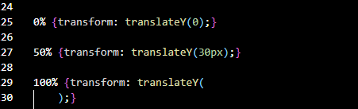

.png)
Nivel 0 Css: Conceptos
El CSS es un lenguaje informático que especifica cómo se presentan los documentos a los usuarios: cómo se diseñan, compaginan, etc. El css se puede representar de dos maneras la primera es abriendo una nueva pestaña con el .css la otra es con el mismo archivo html abriendo dos etiquetas llamadas style y dentro de esas etiquetas se podrían representar los cambios sin necesidad de un nuevo archivo.

a diferencia de html css utiliza nombres o elementos como referencia para producir sus cambios, es decir si en css seleccionas el elemento body y después es necesario usar unas llaves podrás diseñar todos los elementos que hay dentro de body.

Nivel 1: Introducción
En css también se utilizan como referencias elementos o clases, estas clases no se seleccionan igual a un elemento común de html como body p o h, estas clases o nombres se inician con un punto y después el nombre de clase que vas a editar, para esto se usan muchos los contenedores divs o sectors visto en el anterior curso de html.

Nivel 2: Colores y backgrounds
en css se le puede cambiar el color a un elemento tanto también como su background se usan los elementos colors o backgrounds para cambiar el fondo de la misma página o de cualquier otro elementos.

Nivel 3: Colores HEX,RGB,
En css se pueden representar alta variedad de colores por medio de Colores Rgb el cual consiste de 3 parámetros los hexadecimales y el.

Nivel 4: anchuras y alturas
En css se puede variar el tamaño de un elemento como por ejemplo imágenes, por medio de los elementos width y height pixeles.

Nivel 5: Pixeles y porcentajes
estos se usan para determinar el tamaño dirección posición de un elemento, estos dos son los mas básicos posibles a la hora de editar cierto aspecto de un elemento sin embargo hay infinidades de estos tipos como vh etc.

Nivel 6: Las posiciones
La propiedad position de CSS especifica cómo un elemento es posicionado en el documento. Las propiedades top, right, bottom, y left determinan la ubicación final de los elementos posicionados. Sin embargo, hay posiciones acompañadas de estos elementos tal cual como fixed, relative y absolute.

Nivel 7: Margins y Paddings
padding establece el área de relleno en los cuatro lados de un elemento a la vez margin establece los márgenes de un elemento especificando entre uno y cuatro valores todas estas se establecen como margin, margin top (margen de arriba) margin right (margen derecha) margin left (margen izquierda) margin bottom (margen de abajo) estas al igual que padding, padding top padding right padding left y padding bottom.

La principal diferencia entre el padding y el margin de CSS es que el padding es el espacio entre el contenido y el borde del elemento (dentro del propio elemento), mientras que el margin es el espacio alrededor del borde de un elemento.
Nivel 8: Font size Font family
El font size determina el tamaño o dimensión de la letra mientras que font family define su tipo de fuente.

Nivel 9: Bordeando
Border es un elemento que le da un borde definido a un elemento, de esta propiedad salen varios tipos como el border style en donde definimos su tipo de borde o el border color donde se define el color del borde o por último el border size donde definimos la anchura del bordeado.

Nivel 10: Box.Shadow
Box shadow es aquella propiedad que le da un sombreado al elemento que se le indica.

Nivel 11: Float y aligns Displays
al igual que Positions float aligns, aligns items, Displays son otros definidores de posiciones de un elemento estos se usan dependiendo del contenido que queramos mover.

Nivel 12: Text
Para editar el texto en css se usan varias propiedades, propiedades como hyphenate-limit-chars, hyphens, letter-spacing, line-break, overflow-wrap, tab-size, text-align, text-align-last, text-indent, text-justify, text-size-adjust, text-transform, white-space, word-break, word-spacing.

Nivel 13: Background lineal gradient
Background lineal gradient nos permite multicolorear un elemento determinado en css, esta usa como propiedades unos deg para determinar sus texturas a la hora de combinar los colores.
Nivel 14: Hover
El efecto hover es la alteración del aspecto de un componente de la interfaz gráfica una vez que se posa el ratón sobre él, aunque no haya sido seleccionado. Hover se complementa con múltiples animaciones, como transform o transitions.

Nivel 15: Transform y Transitions
La propiedad CSS transform te permite modificar el espacio de coordenadas del modelo de formato visual CSS. Usándola, los elementos pueden ser trasladados, rotados, escalados o sesgados de acuerdo a los valores establecidos. Y la transición es el tiempo o la forma transmitida de la animación.

Nivel 16: Translate y scales
La propiedad translate de CSS nos permite unir los dos ejes anteriores en una sola propiedad. Entonces, podemos darle un valor al translateX y al translateY usando una sola línea de código mientras que la función CSS scale() define una transformación que modifica el tamaño de un elemento en el plano 2D.
Nivel 17: ANIMACIONES
Las animaciones son un conjunto largo de propiedades que le damos a un elemento para que tome forma su animación, hay varios tipos de animaciones incluidas y como tanto también existen sus especificaciones como su nombre el tiempo de duración de la animación o su bucle.
junto con propiedades como scale, translate, transform, es posible hacer animaciones de altas calidades.